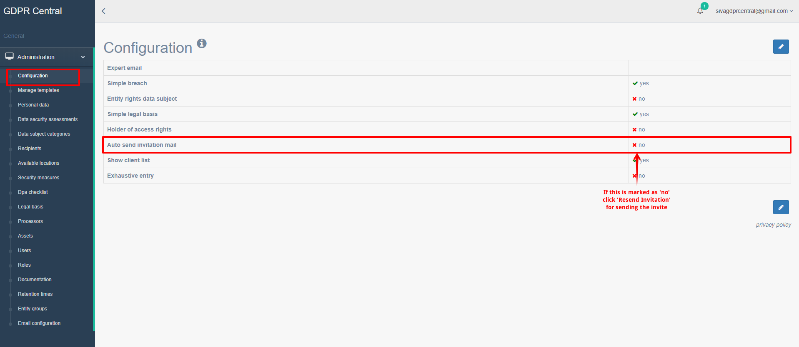

How do I add users to GDPR Central?¶
User Management within GDPR Central is handled through Users under Administration section. You can control what actions a user can perform within GDPR Central. Different users can have different roles within GDPR Central. In addition, they can also have different roles within different companies within GDPR Central.
You have the following user roles within GDPR-Central:
superadmin - Super Administrators have the highest role within GDPR-Central. They can grant different roles to users to different companies within GDPR Central. They can either grant permissions to one company or multiple companies.
admin – Administrators have the highest role within a company in GDPR-Central. They can add users and assign roles to them but cannot do administration to other companies for which they do not have access to.
user – This is the default role for any user in the system. They can perform all actions under the company. They will not be able to approve anything but can request for approval.
read-only – This role allows the user to only view information within the system. They cannot create, edit, or delete information.
auditor – This role is granted to Data Protection Authority (DPA), in case of an investigation. In case of an investigation, if you want to directly give the DPA access to the system, you can grant this role. A user with auditor role can login to GDPR Central and only see approved processing activities. They will not be able to edit anything or see the work in progress.
You can add or edit users and their roles to GDPR Central only if you have superadmin role.
To add a user within GDPR Central, perform the following steps:
Login to GDPR Central using your credentials if not already logged in.
In the left pane, under Administration, click Users. The list of users already in the system is listed here.
Click New button. The New User registration screen appears.
New User Registration Details¶ Field
Description
Email
Enter the e-mail address of the new user.
Company
Select the company for which you would like to assign this user role to. For superadmin role, please leave this field blank.
Role
Select the role you would like to assign to this user.
Locale
Select the language locale version to which the user needs access to. en – English nl – Dutch fr – French These are the languages available now and there are plans to add more languages.
deactivated
If you want the user to be active in the system, please leave this unchecked.
Click Save button. You get a success message, and the users screen with the list of users is displayed.
If Auto send invitation mail under Administration > Configuration has been marked as No, you will need to click Resend invitation button for the invite to be sent to the user.
